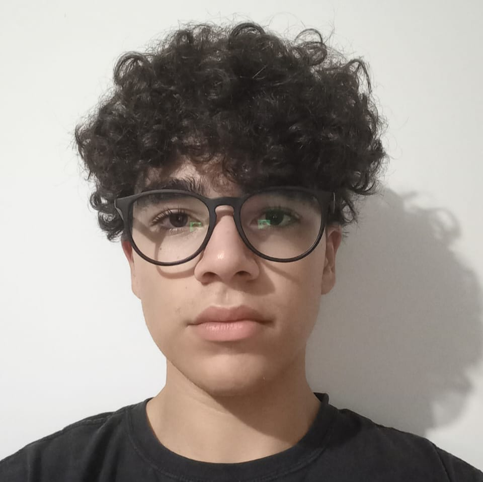

Giovanni

As aves são animais vertebrados que se destacam pela presença de suas penas, uma característica exclusiva desse grupo. Muitas espécies apresentam a capacidade de voo, mas nem todas voam, havendo espécies nadadoras e corredoras. o nosso site vai rakear a melhore aves que exitem
Mede cerca 37 centímetros de comprimento e pode pesar em torno de 277 gramas. Possui um esporão pontudo, com 1 cm de comprimento no final das asas, uma faixa preta desde o pescoço ao peito e ainda penas longas (penacho) na região posterior da cabeça, possui peito preto e branco, com dorso cinzento
O secretário, também conhecido como serpentário é uma espécie de ave de rapina de grande porte, predominantemente terrestre. Endémica de África, é encontrada geralmente nos campos abertos de erva e nas savanas das regiões subsarianas. Descrita pela primeira vez em 1779 por John Frederick Miller, apesar de ser um membro da ordem Accipitriformes, tem a sua propria familia, a Sagittariidae. É uma ave facilmente avistada visto ser muito grande e com um corpo semelhante a uma águia em pernas de grou que lhe dá uma altura de 1.3 m. Os sexos são de aparência similar. Os adultos têm face vermelho-laranja sem penas e uma plumagem predominantemente cinzenta.
O casuar é uma ave do grupo das aves ratitas de grande porte, nativas do nordeste da Austrália, Nova Guiné e ilhas circundantes. São aves curiosas que costumam imitar movimentos de humanos depois de observá-los atentamente, embora não sejam muito amigáveis ou domesticáveis. As três espécies de casuar existentes pertencem à família Casuariidae e são juntamente com o avestruz, a ema, o avestruz-somali e o emu as maiores aves existentes na atualidade.
É conhecido também como gavião-de-penacho, guiraçu, gavião-real e uiraçu, gavião-rei, gavião-gato, urucotim, uiracotim, ouiracu, gavião-pega-macaco, pega-macaco Embora não seja a maior das aves predadoras do planeta, é tida como a mais forte. Possui bico potente e suas garras são maiores que as do urso pardo americano, suas pernas têm a grossura de um punho de um homem adulto. Tem um crescimento populacional muito lento. Este fato, associado à destruição de grandes áreas florestais e à caça indiscriminada, torna a espécie ameaçada de extinção em nosso País.
Coruja-das-torres, Tyto furcata, ou Tyto alba (no Velho Mundo), é uma espécie que pertence a família dos titonídeos, também conhecida pelos nomes de coruja-da-igreja, coruja-católica, rasga-mortalha e suindara. Habitam em diversos lugares do mundo, e se encontram em todos os continentes exceto a Antártica. Gostam de lugares abertos e de climas que variam de temperados aos tropicais.